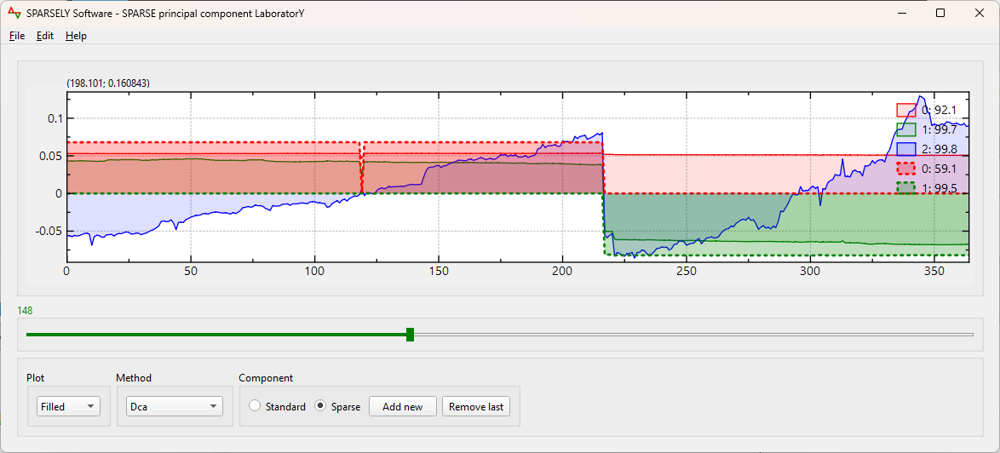

A Sparse Principal Component Solver and Selector

Sparsely-0.1.0-win64.exe
Sparsely-0.1.0-Linux.run
Sparsely-0.1.0-Darwin.dmg
Start your data analysis immediately after installation. Create your project by loading your data.
Save the current state of your project and retrieve it later.
Use graph tools to export data and plots.
Sparsely offers a very simple interface allowing you to compute sparse principal components via various methods. It allows to run several principal component rounds. It also offers the possibility of using classical principal components as controls.
The proposed plots and controls make it easy to read components behaviors for a better interpretation of both sparse and classical principal components.
Various controls allow you to tune sparse components for a better tradeoff between interpretability and explained variances and should highlight several facets of the data.
A C++ header only library for sparse principal component computations. The solver feeds Sparsely and can be used independently. It will implement several sparse principal component and deflation methods.
Incorporate your own sparse principal component method. Dynamically via addons. Statically via C++.
Maintain all your preferences settings (addon location, preferred method, plot type, colors ...) in a single json file.
An Open Source Software on your favorite Os: Windows, Linux, macOs.
Yearly Data analysis on exchange rates over several decades around 365 features (days) and 20 samples (years).
The tool should be very practical for engineers, scientists and other data professionals. It would be great if the tool and its next versions helped make it easy to use sparse principal component analysis.
Read our documentation for guides and advanced illustrations.
User Guide